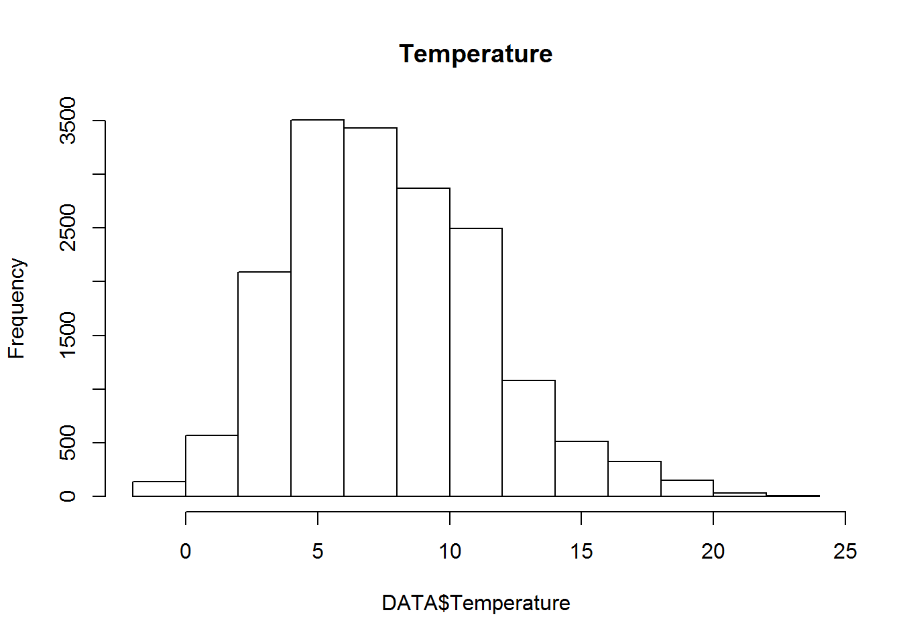

In this post we are going to take a look at various data importing techniques used for spatial data analysis
Accessing and importing open access environmental data is a crucial skill for data scientists. This section teaches you how to download data from the Web, import it in R and check it for consistency.
In this section, we are going to take a look at…
#Set the URL with the CSV Files
URL <- "http://earthquake.usgs.gov/earthquakes/feed/v1.0/summary/all_day.csv"#Load the CSV File
Data <- read.table(file=URL,
sep=",",
header=TRUE,
na.string="")#Help function
help(read.table)#Examining the data
str(Data)## 'data.frame': 167 obs. of 22 variables:
## $ time : Factor w/ 167 levels "2017-12-11T07:45:14.980Z",..: 167 166 165 164 163 162 161 160 159 158 ...
## $ latitude : num 34.5 64.8 59.8 60.1 32.9 ...
## $ longitude : num -119 -148 -147 -152 -116 ...
## $ depth : num 30.2 4.5 11.4 66.6 12 ...
## $ mag : num 1.37 0.9 2.4 1.8 0.87 1.77 0.66 0.24 1.38 0.53 ...
## $ magType : Factor w/ 5 levels "mb","mb_lg","md",..: 4 4 4 4 4 4 4 4 3 4 ...
## $ nst : int 12 NA NA NA 20 70 8 16 23 25 ...
## $ gap : num 160 NA NA NA 92 35 138 117 82 76 ...
## $ dmin : num 0.283 NA NA NA 0.134 ...
## $ rms : num 0.27 0.43 0.75 0.54 0.17 0.22 0.18 0.13 0.04 0.15 ...
## $ net : Factor w/ 10 levels "ak","ci","hv",..: 2 1 1 1 2 2 2 2 5 2 ...
## $ id : Factor w/ 167 levels "ak17582323","ak17582327",..: 80 22 21 20 79 78 77 76 121 75 ...
## $ updated : Factor w/ 167 levels "2017-12-11T08:45:50.205Z",..: 167 165 164 162 161 163 158 156 157 154 ...
## $ place : Factor w/ 139 levels "105km NW of Unalakleet, Alaska",..: 21 77 101 75 55 126 4 134 98 12 ...
## $ type : Factor w/ 3 levels "earthquake","explosion",..: 1 1 1 1 1 1 1 1 1 1 ...
## $ horizontalError: num 1.93 NA NA NA 0.32 0.19 0.79 0.3 0.23 0.28 ...
## $ depthError : num 1.01 0.8 0.2 1.7 0.97 ...
## $ magError : num 0.319 NA NA NA 0.163 0.229 0.251 0.139 0.07 0.11 ...
## $ magNst : int 27 NA NA NA 11 25 7 7 6 18 ...
## $ status : Factor w/ 2 levels "automatic","reviewed": 1 1 1 1 1 1 1 1 1 1 ...
## $ locationSource : Factor w/ 10 levels "ak","ci","hv",..: 2 1 1 1 2 2 2 2 5 2 ...
## $ magSource : Factor w/ 10 levels "ak","ci","hv",..: 2 1 1 1 2 2 2 2 5 2 ...Often times, datasets are provided for free, but on FTP, websites and practitioners need to be able to access them. R is perfectly capable of downloading and importing data from FTP sites.
In this section, we are going to take a look at…
#Load required packages
library(RCurl)## Loading required package: bitopslibrary(XML)#Create a list with all the files on the FTP site
list <- getURL("ftp://ftp.ncdc.noaa.gov/pub/data/gsod/2016/",
dirlistonly = TRUE) #Clean the list
FileList <- strsplit(list, split="\r\n")#Create a new directory where to download these files
DIR <- paste(getwd(),"/NOAAFiles",sep="")
dir.create(DIR)## Warning in dir.create(DIR): 'E:\Projects\sumendar.github.io\content\post
## \NOAAFiles' already exists#Loop to download the files
for(FileName in unlist(FileList)){
URL <- paste0("ftp://ftp.ncdc.noaa.gov/pub/data/gsod/2016/",FileName)
download.file(URL, destfile=paste0(DIR,"/",FileName), method="auto",
mode="wb")
}#A more elegant way
DownloadFile <- function(x){
URL <- paste0("ftp://ftp.ncdc.noaa.gov/pub/data/gsod/2016/",x)
download.file(URL, destfile=paste0(DIR,"/",x), method="auto", mode="wb")
}
lapply(unlist(FileList)[1:5], DownloadFile)#Dowload a compressed file
URL <- "ftp://ftp.ncdc.noaa.gov/pub/data/gsod/2015/gsod_2015.tar"
download.file(URL, destfile=paste0(DIR,"/gsod_2015.tar"),
method="auto",mode="wb")
untar(paste0(getwd(),"/NOAAFiles/","gsod_2015.tar"),
exdir=paste0(getwd(),"/NOAAFiles"))help(unzip)
#For more information on the full experiment please visit:
#http://r-video-tutorial.blogspot.ch/2014/12/accessing-cleaning-and-plotting-noaa.htmlSome data cannot be open with neither read.table nor read.fwf
In this desperate cases in readLines can help
In this section, we are going to take a look at… *
#Download the data from the FTP site
URL <- "ftp://ftp.ncdc.noaa.gov/pub/data/noaa/2015/010231-99999-2015.gz"
FileName <- "010231-99999-2015.gz"
download.file(URL, destfile=paste0(getwd(),"/",FileName), method="auto", mode="wb")data.strings <- readLines(gzfile(FileName, open="rt"))## Warning in readLines(gzfile(FileName, open = "rt")): seek on a gzfile
## connection returned an internal errorhead(data.strings)## [1] "0071010231999992015010100204+64350+007800FM-15+000099999V0202201N021119999999N999999999+00801+00701999999ADDMA1100401999999REMMET044METAR ENDR 010020Z AUTO 22041KT 08/07 Q1004="
## [2] "0071010231999992015010100504+64350+007800FM-15+000099999V0202201N020619999999N999999999+00801+00701999999ADDMA1100301999999REMMET044METAR ENDR 010050Z AUTO 22040KT 08/07 Q1003="
## [3] "0071010231999992015010101204+64350+007800FM-15+000099999V0202201N020619999999N999999999+00801+00701999999ADDMA1100301999999REMMET044METAR ENDR 010120Z AUTO 22040KT 08/07 Q1003="
## [4] "0071010231999992015010101504+64350+007800FM-15+000099999V0202201N019019999999N999999999+00801+00701999999ADDMA1100301999999REMMET044METAR ENDR 010150Z AUTO 22037KT 08/07 Q1003="
## [5] "0071010231999992015010102204+64350+007800FM-15+000099999V0202201N017519999999N999999999+00801+00801999999ADDMA1100301999999REMMET044METAR ENDR 010220Z AUTO 22034KT 08/08 Q1003="
## [6] "0071010231999992015010102504+64350+007800FM-15+000099999V0202201N017519999999N999999999+00801+00701999999ADDMA1100201999999REMMET044METAR ENDR 010250Z AUTO 22034KT 08/07 Q1002="Ext.Latitude <- function(x){
substr(x, start=29, stop=34)
}Ext.Longitude <- function(x){
substr(x, start=35, stop=41)
}Ext.Temp <- function(x){
substr(x, start=88, stop=92)
}LAT <- lapply(data.strings, Ext.Latitude)
LON <- lapply(data.strings, Ext.Longitude)
TEMP <- lapply(data.strings, Ext.Temp)DATA <- data.frame(Latitude=as.numeric(unlist(LAT))/1000,
Longitude=as.numeric(unlist(LON))/1000,
Temperature=as.numeric(unlist(TEMP))/10)DATA[DATA$Temperature==999.9,"Temperature"] <- NA
str(DATA)## 'data.frame': 17291 obs. of 3 variables:
## $ Latitude : num 64.3 64.3 64.3 64.3 64.3 ...
## $ Longitude : num 7.8 7.8 7.8 7.8 7.8 7.8 7.8 7.8 7.8 7.8 ...
## $ Temperature: num 8 8 8 8 8 8 8 8 8 8 ...hist(DATA$Temperature, main="Temperature")